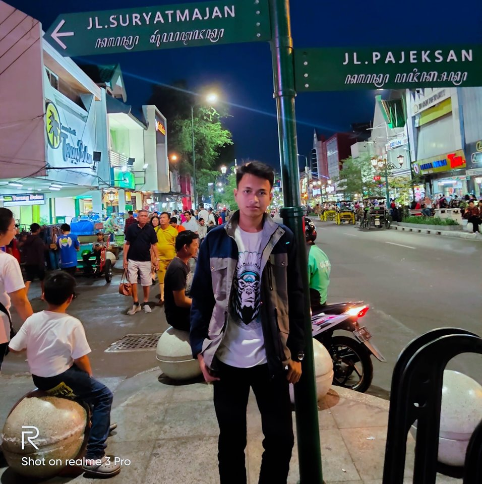

Seni Indonesia adalah aplikasi pendidikan tentang kesenian yang ada di Indonesia, baik seni tradisional ataupun seni modern. Dibuat untuk ikut serta Lomba Mobile Kihajar 2019.

Romadhan Edy Prasetyo
PROGRAMMER
Siswa SMK Negeri 10 Jakarta, yang membuat aplikasi Seni Indonesia.
Website Pribadi